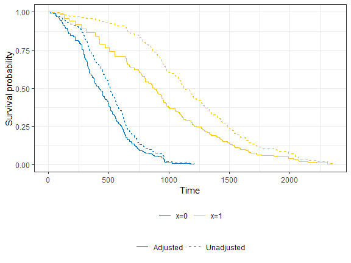
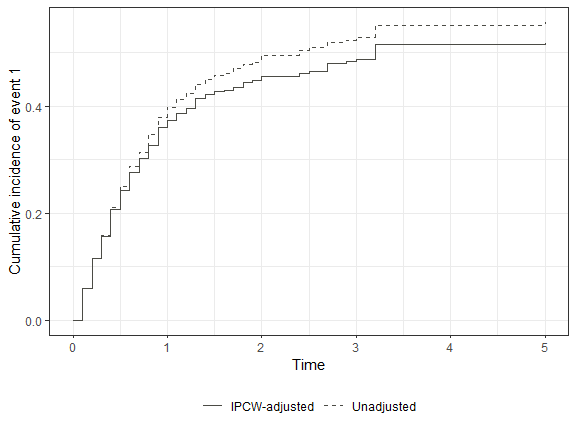

The ipcw package estimates inverse probability of censoring weights (IPCW) for right-censored data for either a single event or competing events.
Installation
You can install the development version of ipcw from GitHub with:
# install.packages("pak")
pak::pak("zabore/ipcw")Example
Dependent censoring occurs when participants who are censored at any point in time are more, or less, likely to have an event going forward as compared to the participants who remain in the study. This leads to the distribution of residual time to the event of interest being different in censored and uncensored populations. Dependent censoring can bias standard survival estimates. The examples below use the ipcw package’s simulated example datasets to compare unadjusted estimates to IPCW-adjusted estimates, for both a single event and competing risks.
# Install packages if needed
# install.packages(c(""survival", "ggsurvfit", "dplyr"))
# install.packages("pak")
# pak::pak("zabore/ipcw")
# Load packages
library(ipcw)
library(survival)
library(ggsurvfit)
library(dplyr)Single event
In this example there is a single event type, and one covariate of interest, x.
set.seed(67)
dat <- sim_data_se(n = 500)
# Unadjusted (naive) Kaplan-Meier, ignoring dependent censoring
naive_fit <-
survfit(
Surv(t, delta) ~ x,
data = dat)
# Convert to counting-process (long) format and compute IPCW
dat_long <- get_ipcw_wgt_se(dat)
# IPCW-adjusted Kaplan-Meier
ipcw_fit <-
survfit(
Surv(tstart, tstop, delta) ~ x,
data = dat_long,
weights = wgt,
timefix = FALSE)
Note that this plot is for demonstration purposes only. In practice, when dependent censoring is present only the IPCW-adjusted curves would be of interest. In this example, we see that the unadjusted estimates over-estimate the survival probability in both groups, and adjustment for dependent censoring corrects for this. See vignette("single-event-guided-example") for a thorough demonstration of the methods implemented in this package for single event settings, including bootstrap confidence intervals for the IPCW-adjusted Kaplan-Meier curves and Cox regression.
Competing risks
set.seed(9843)
dat_cr <- sim_data_cr(n = 500, censoring = "baseline")
esttimes <- seq(0, 5, 0.1)
# Unadjusted (naive) cumulative incidence, ignoring dependent censoring
ci_naive <- cuminc_naive_cr(dat_cr, esttimes)
# Convert to counting-process (long) format and compute IPCW
dat_long_cr <- add_ipcw_weights_cr(wide_to_long_cr(dat_cr), strat = "no")
# IPCW-adjusted cumulative incidence
ci_ipcw <- cuminc_ipcw_cr(dat_long_cr, esttimes)
In this example, we see that the unadjusted estimates overestimate the cumulative incidence of event 1 in the presence of the competing risk of event 2. Adjustment for dependent censoring through weighting corrects this. See vignette("competing-risks-guided-example") for a thorough demonstration of the methods implemented in this package for competing risks settings, including Fine-Gray regression and bootstrap standard errors.